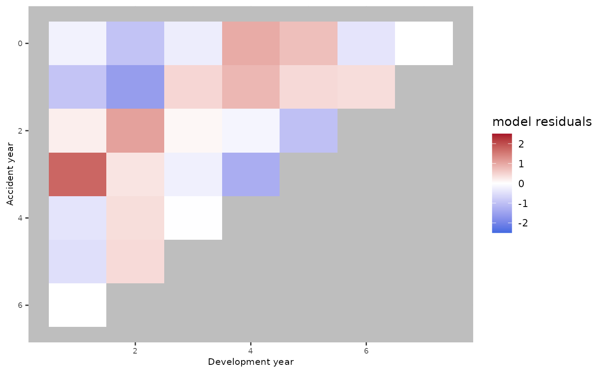
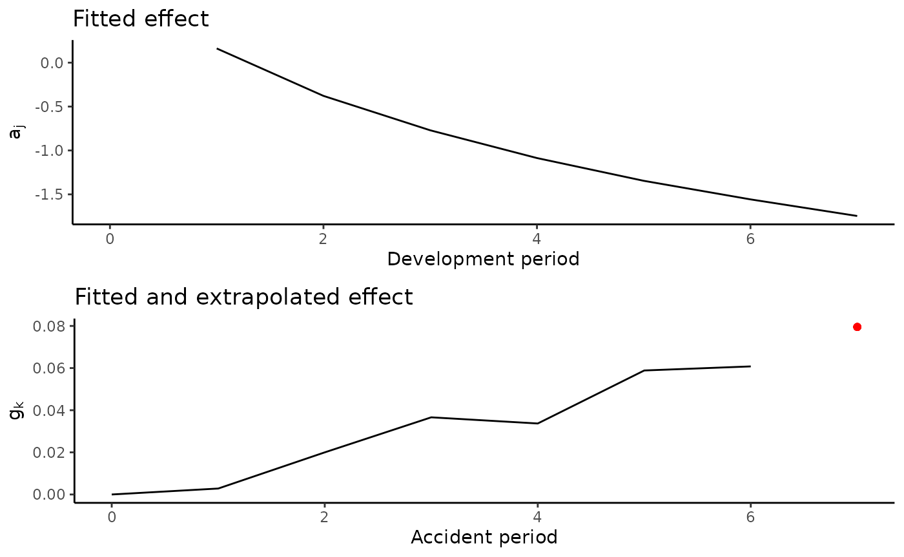

Introduction
The clmplus package provides practitioners with a fast
and user friendly implementation of the modeling framework we derived in
our paper Pittarello G., Hiabu M., and Villegas A., Replicating and
extending chain-ladder via an age-period-cohort structure on the claim
development in a run-off triangle, (pre-print, 2022).
We were able to connect the well-known hazard models developed in life insurance to non-life run-off triangles claims development. The flexibility of this approach goes beyond the methodological novelty: we hope to provide a user-friendly set of tools based on the point of contact between non-life insurance and life insurance in the actuarial science.
This vignette is organized as follows:
We show the connection between the age-period representation and run-off triangles.
We replicate the chain-ladder model with an age-model. As shown in the paper, by using the
clmplusapproach the resulting model is saving some parameters with respect to the standard GLM approach.We show an example where adding a cohort effect can lead to an improvement on the model fit.
In this tutorial, we show an example on the AutoBIPaid
run-off triangle from the ChainLadder package.
One discipline, one language
Consider the data set we chose for this tutorial.
The run-off triangle representation is displayed below:
library(ChainLadder)
data("AutoBI")
dataset=AutoBI$AutoBIPaid
dataset
#> [,1] [,2] [,3] [,4] [,5] [,6] [,7] [,8]
#> [1,] 1904 5398 7496 8882 9712 10071 10199 10256
#> [2,] 2235 6261 8691 10443 11346 11754 12031 NA
#> [3,] 2441 7348 10662 12655 13748 14235 NA NA
#> [4,] 2503 8173 11810 14176 15383 NA NA NA
#> [5,] 2838 8712 12728 15278 NA NA NA NA
#> [6,] 2405 7858 11771 NA NA NA NA NA
#> [7,] 2759 9182 NA NA NA NA NA NA
#> [8,] 2801 NA NA NA NA NA NA NA
colnames(dataset)=c(0:(dim(dataset)[1]-1))
rownames(dataset)=c(0:(dim(dataset)[1]-1))Practitioners in general insurance refer to the x axis of this representation as development years. Similarly, the y axis is called accident years. The third dimension that matters is the diagonals: the calendar years. There is a one-to-one correspondence between the age-period representation and run-off triangles. In notional terms, life insurance actuaries use the following terminology:
ages are development years.
cohorts are accident years.
periods is calendar years.
Indeed, the age-period representation of the run-off triangle is the following:
#> [,1] [,2] [,3] [,4] [,5] [,6] [,7] [,8]
#> [1,] 1904 2235 2441 2503 2838 2405 2759 2801
#> [2,] NA 5398 6261 7348 8173 8712 7858 9182
#> [3,] NA NA 7496 8691 10662 11810 12728 11771
#> [4,] NA NA NA 8882 10443 12655 14176 15278
#> [5,] NA NA NA NA 9712 11346 13748 15383
#> [6,] NA NA NA NA NA 10071 11754 14235
#> [7,] NA NA NA NA NA NA 10199 12031
#> [8,] NA NA NA NA NA NA NA 10256Observe that the y axis is now the development years (or age) component.
Calendar years (or periods) are displayed on the x axis.
Accident years (or cohorts) are on the diagonals.
Replicate the chain-ladder with the clmplus
package
clmplus is an out-of-the box set of tools to compute the
claims reserve. We now show how to replicate the chain ladder model.
Observe the run-off triangle data structure first needs to be
initialized to a AggregateDataPP object.
Starting from the results in the paper we showed how to replicate the
chain ladder with an age model. The computation on the
AggregateDataPP object is obtained with the method
clmplus specifying an hazard model. The
clmplus method, estimates the models parameters.
a.model.fit=clmplus(AggregateDataPP = rtt,
hazard.model = "a")
#> StMoMo: The following ages have been zero weigthed: 1
#> StMoMo: The following years have been zero weigthed: 1
#> StMoMo: The following cohorts have been zero weigthed: -7 -6 -5 -4 -3 -2 -1 7
#> StMoMo: Start fitting with gnm
#> StMoMo: Finish fitting with gnmOut of the fitted model, it is possible to extract the fitted development factors:
a.model.fit$fitted_development_factors
#> [,1] [,2] [,3] [,4] [,5] [,6] [,7] [,8]
#> [1,] NA 3.098156 1.443611 1.195516 1.087378 1.036028 1.018557 1.005589
#> [2,] NA 3.098156 1.443611 1.195516 1.087378 1.036028 1.018557 NA
#> [3,] NA 3.098156 1.443611 1.195516 1.087378 1.036028 NA NA
#> [4,] NA 3.098156 1.443611 1.195516 1.087378 NA NA NA
#> [5,] NA 3.098156 1.443611 1.195516 NA NA NA NA
#> [6,] NA 3.098156 1.443611 NA NA NA NA NA
#> [7,] NA 3.098156 NA NA NA NA NA NA
#> [8,] NA NA NA NA NA NA NA NAIt is also possible to extract the fitted effects on the claims development.
a.model.fit$fitted_effects
#> $fitted_development_effect
#> 0 1 2 3 4 5
#> NA 0.02366899 -1.01313612 -1.72538123 -2.48027780 -3.34130515
#> 6 7
#> -3.99615988 -5.18978418
#>
#> $fitted_calendar_effect
#> NULL
#>
#> $fitted_accident_effect
#> NULLPredictions can be computed with the predict method.
a.model <- predict(a.model.fit)Out of the predict method, we can extract the predicted development factors, the full and lower triangle of predicted cumulative claims.
a.model$development_factors_predicted
#> [,1] [,2] [,3] [,4] [,5] [,6] [,7] [,8]
#> [1,] NA NA NA NA NA NA NA NA
#> [2,] NA NA NA NA NA NA NA 1.005589
#> [3,] NA NA NA NA NA NA 1.018557 1.005589
#> [4,] NA NA NA NA NA 1.036028 1.018557 1.005589
#> [5,] NA NA NA NA 1.087378 1.036028 1.018557 1.005589
#> [6,] NA NA NA 1.195516 1.087378 1.036028 1.018557 1.005589
#> [7,] NA NA 1.443611 1.195516 1.087378 1.036028 1.018557 1.005589
#> [8,] NA 3.098156 1.443611 1.195516 1.087378 1.036028 1.018557 1.005589
a.model$lower_triangle
#> [,1] [,2] [,3] [,4] [,5] [,6] [,7] [,8]
#> [1,] NA NA NA NA NA NA NA NA
#> [2,] NA NA NA NA NA NA NA 12098.24
#> [3,] NA NA NA NA NA NA 14499.15 14580.19
#> [4,] NA NA NA NA NA 15937.22 16232.97 16323.69
#> [5,] NA NA NA NA 16612.95 17211.49 17530.88 17628.86
#> [6,] NA NA NA 14072.42 15302.04 15853.34 16147.53 16237.77
#> [7,] NA NA 13255.24 15846.86 17231.52 17852.34 18183.62 18285.24
#> [8,] NA 8677.936 12527.57 14976.91 16285.56 16872.30 17185.39 17281.44
a.model$full_triangle
#> 0 1 2 3 4 5 6 7
#> 0 1904 5398.000 7496.00 8882.00 9712.00 10071.00 10199.00 10256.00
#> 1 2235 6261.000 8691.00 10443.00 11346.00 11754.00 12031.00 12098.24
#> 2 2441 7348.000 10662.00 12655.00 13748.00 14235.00 14499.15 14580.19
#> 3 2503 8173.000 11810.00 14176.00 15383.00 15937.22 16232.97 16323.69
#> 4 2838 8712.000 12728.00 15278.00 16612.95 17211.49 17530.88 17628.86
#> 5 2405 7858.000 11771.00 14072.42 15302.04 15853.34 16147.53 16237.77
#> 6 2759 9182.000 13255.24 15846.86 17231.52 17852.34 18183.62 18285.24
#> 7 2801 8677.936 12527.57 14976.91 16285.56 16872.30 17185.39 17281.44Interestingly we provide predictions for different forecasting
horizons. Below predictions for one calendar period. This can be
specified with the forecasting_horizon argument.
a.model.2 <- predict(a.model.fit,
forecasting_horizon=1)We show the consistency of our approach by comparing our estimates
with those obtained with the Mack chain ladder method as implemented in
the ChainLadder package.
mck.chl <- MackChainLadder(dataset)
ultimate.chl=mck.chl$FullTriangle[,dim(mck.chl$FullTriangle)[2]]
diagonal=rev(t2c(mck.chl$FullTriangle)[,dim(mck.chl$FullTriangle)[2]])Estimates are gathered in a data.frame to ease the
understanding.
data.frame(ultimate.cost.mack=ultimate.chl,
ultimate.cost.clmplus=a.model$ultimate_cost,
reserve.mack=ultimate.chl-diagonal,
reserve.clmplus=a.model$reserve
)
#> ultimate.cost.mack ultimate.cost.clmplus reserve.mack reserve.clmplus
#> 0 10256.00 10256.00 0.00000 0.00000
#> 1 12098.24 12098.24 67.23865 67.23865
#> 2 14580.19 14580.19 345.18727 345.18727
#> 3 16323.69 16323.69 940.68770 940.68770
#> 4 17628.86 17628.86 2350.85562 2350.85562
#> 5 16237.77 16237.77 4466.77443 4466.77443
#> 6 18285.24 18285.24 9103.24335 9103.24335
#> 7 17281.44 17281.44 14480.43832 14480.43832
cat('\n Total reserve:',
sum(a.model$reserve))
#>
#> Total reserve: 31754.43Claims reserving with GLMs compared to hazard models
We fit the standard GLM model with the apc package. As
shown in the paper the chain-ladder model can be replicated by fitting
an age-cohort model.
library(apc)
ds.apc = apc.data.list(cum2incr(dataset),
data.format = "CL")
ac.model.apc = apc.fit.model(ds.apc,
model.family = "od.poisson.response",
model.design = "AC")Inspect the model coefficients derived from the output:
ac.model.apc$coefficients.canonical[,'Estimate']
#> level age slope cohort slope DD_age_3 DD_age_4 DD_age_5
#> 7.41596168 0.74105900 0.16519698 -1.16411707 -0.02909890 -0.17467013
#> DD_age_6 DD_age_7 DD_age_8 DD_cohort_3 DD_cohort_4 DD_cohort_5
#> -0.17533888 0.17408744 -0.55360421 0.02140672 -0.07364998 -0.03603392
#> DD_cohort_6 DD_cohort_7 DD_cohort_8
#> -0.15911660 0.20095088 -0.17521544
ac.fcst.apc = apc.forecast.ac(ac.model.apc)
data.frame(reserve.mack=ultimate.chl-diagonal,
reserve.apc=c(0,ac.fcst.apc$response.forecast.coh[,'forecast']),
reserve.clmplus=a.model$reserve
)
#> reserve.mack reserve.apc reserve.clmplus
#> 0 0.00000 0.00000 0.00000
#> 1 67.23865 67.23865 67.23865
#> 2 345.18727 345.18727 345.18727
#> 3 940.68770 940.68770 940.68770
#> 4 2350.85562 2350.85562 2350.85562
#> 5 4466.77443 4466.77443 4466.77443
#> 6 9103.24335 9103.24335 9103.24335
#> 7 14480.43832 14480.43832 14480.43832Our method is able to replicate the chain-ladder results with no need to add the cohort component.
a.model.fit$fitted_effects
#> $fitted_development_effect
#> 0 1 2 3 4 5
#> NA 0.02366899 -1.01313612 -1.72538123 -2.48027780 -3.34130515
#> 6 7
#> -3.99615988 -5.18978418
#>
#> $fitted_calendar_effect
#> NULL
#>
#> $fitted_accident_effect
#> NULLFurther inspection can be performed with the clmplus
package, which provides the graphical tools to inspect the fitted
effects. Observe we model the rate in continuous time, the choice of a
line plot is then consistent.
plot(a.model)
The benefitial effect of adding the cohort component
It is straightforward to state that from the statistical perspective it is desirable to have a model with less parameters. Nevertheless, our approach goes far beyond that.
By adding the cohort effect we are able to improve our modeling.
We show these results by inspecting the residuals plots.
#make it triangular
plot(a.model.fit)
Clearly, the red and blue areas suggest some trends that the model wasn’t able to catch. Consider now the age-cohort model and its residuals plot.
ac.model.fit <- clmplus(rtt,
hazard.model="ac")
#> StMoMo: The following ages have been zero weigthed: 1
#> StMoMo: The following years have been zero weigthed: 1
#> StMoMo: The following cohorts have been zero weigthed: -7 -6 -5 -4 -3 -2 -1 7
#> StMoMo: Start fitting with gnm
#> StMoMo: Finish fitting with gnm
ac.model <- predict(ac.model.fit,
gk.fc.model='a')
plot(ac.model.fit)
With no need of extrapolating a period component, we were able to
improve the fit already. Pay attention, the cohort component for the
cohort m is extrapolated.
plot(ac.model)
Extrapolation of a period component
Similarly, it is possible to add a period component and choose an age-period model or an age-period-cohort model.
ap.model.fit = clmplus(rtt,
hazard.model = "ap")
#> StMoMo: The following ages have been zero weigthed: 1
#> StMoMo: The following years have been zero weigthed: 1
#> StMoMo: The following cohorts have been zero weigthed: -7 -6 -5 -4 -3 -2 -1 7
#> StMoMo: Start fitting with gnm
#> StMoMo: Finish fitting with gnm
ap.model<-predict(ap.model.fit,
ckj.fc.model='a',
ckj.order = c(0,1,0))
apc.model.fit = clmplus(rtt,hazard.model = "apc")
#> StMoMo: The following ages have been zero weigthed: 1
#> StMoMo: The following years have been zero weigthed: 1
#> StMoMo: The following cohorts have been zero weigthed: -7 -6 -5 -4 -3 -2 -1 7
#> StMoMo: Start fitting with gnm
#> StMoMo: Finish fitting with gnm
apc.model<-predict(apc.model.fit,
gk.fc.model='a',
ckj.fc.model='a',
gk.order = c(1,1,0),
ckj.order = c(0,1,0))
plot(ap.model.fit)
It can be seen that the age-period model does not suggest any serious improvement from the age-cohort model. It is worth noticing one more time that the age-cohort model does not require any extrapolation. In a similar fashion, we plot the age-period-cohort model below, which seems to lead us to a small improvement.
plot(apc.model.fit)
Below, the effects of the age-period-cohort model.
plot(apc.model)
Conclusions
In this vignette we wanted to show the flexibility of our modeling approach with respect to the well-known chain-ladder model.
By modeling the hazard rate we are able to replicate the chain-ladder results with less parameters. Indeed, we model the age component directly and add a cohort effect if needed.
Going from an age model to an age-cohort model may lead to a serious improvement in the model results.